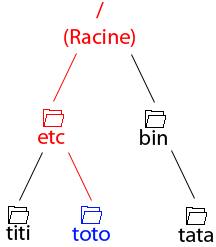

À la fin de ce tuto, vous serez capables d'exécuter les actions les plus utiles : se connecter (utile, n'est-il pas :p ? ), afficher l'aide, lister un dossier, changer de dossier, récupérer un fichier, envoyer un fichier, se déconnecter, quitter le module FTP, et fermer l'invite de commande.
Avant tout chose, il est important de savoir quoi lancer pour accéder au module FTP. Nous devons lancer l'invite de commande (Command Prompt, pour les anglophones).
Vous avez deux solutions :
aller dans le menu démarrer, Tous les programmes, Accessoires, Invite de commande.
ouvrir le menu démarrer, Exécuter... (ou les touches [Windows] + [R]) et taper cmd.
Et voilà, vous vous retrouvez avec votre magnifique invite de commande prête à l'action et qui n'attend plus que vos ordres :) !
Note pour ceux qui n'aiment pas les couleurs de base : utilisez la commande color attribut (où attribut est une combinaison de deux caractères allant de 0 à 9 et de A à F, sachant que le premier caractère sera la couleur de fond et le second la couleur de la police d'écriture). Par exemple, pour faire Matrix, ça sera : color 02. Vous obtiendrez des informations sur cette commande en tapant help color.
Maintenant, on va se connecter sur un serveur FTP distant.Pour cela, deux options.
La méthode rapide
Premièrement, vous pouvez taper directement ftp hote, où vous remplacerez `hote` par l'adresse de votre serveur FTP distant. En faisant cela, vous vous connecterez directement au serveur distant (s'il existe) en utilisant le port 21 (port par défaut pour le FTP, c'est le plus souvent utilisé ; donc, en général, pas de problème avec cette méthode), et vous voilà plongés dans la bataille !
La commande open
La deuxième option qui s'offre à vous est de réaliser cette étape en deux actions. Premièrement, vous entrez dans le module FTP en tapant simplement ftp. Ensuite, vous devez utiliser la fonction open qui va tenter d'établir la connexion avec le serveur distant, en tapant open hote [port] (où vous remplacerez `hote` par l'adresse de votre serveur FTP distant). Vous pouvez indiquer un port spécifique à la suite de votre hote en tapant par exemple open ftp.hote.com 2280, ce qui tentera d'établir un connexion FTP vers le serveur distant `ftp.hote.com` sur le port 2280. Si vous désirez utiliser le port par défaut, laissez simplement vide à la suite de votre hote ; le port est un argument facultatif pour la fonction open.
Si votre connexion aboutit, vous aurez le droit à plein de messages de la part du serveur FTP distant : on va s'en occuper plus tard. Si votre connexion échoue, vous pouvez avoir un message de type "Unknown host hote", ce qui signifie que l'adresse que vous avez tapée est probablement érronée, ou encore de type "Timeout", ce qui signifie que le serveur existe physiquement mais qu'il ne répond pas ; il faudra réessayer plus tard.
Vous voilà à présent connectés sur votre serveur FTP distant. Et là, c'est le drame, voilà que notre cher serveur se met à baragouiner dans une langue inconnue :euh: !!
Pas de panique : décryptons donc l'appel de détresse qu'il nous envoie en nous penchant sur un petit exemple (attention, c'est un cas particulier, je ne peux pas me pencher sur tous les cas de messages de bienvenue de tous les différents serveurs FTP du monde).
Voilà la bête...
Home sweet home
Première chose qu'on nous annonce : "Connected to ftp.hote.com" ...plutôt bonne nouvelle, c'est ce qu'on voulait faire dans la partie précédente. ;) Ça, c'est votre module FTP qui vous le dit, il a réussi à se connecter.
Ensuite, plein de lignes commençant par 220. Eh non : ça n'est pas le voltage du serveur, mais bel et bien le message de bienvenue.
La référence nous dit : 220 Service ready for new user. Cela confirme qu'on est les bienvenus. Vous remarquez que le serveur nous a dit quel logiciel gérait le serveur (ici, Pure FTPd), le nombre de connexions utilisées par rapport au nombre de connexions allouées, l'heure, le port du serveur et quelques infos utiles (ici concernant l'Ipv6 et la durée de idle, c'est-à-dire le temps passé à ne rien faire avant déconnexion) sur le serveur.
Ensuite, on entre dans du 230 (Ah !! Mon dieu : une surchauffe... :D ). La RFC nous dit 230 User logged in, proceed.
Ahlala, je saute des étapes moi, heureusement que vous suivez ;) .
S'identifier
Après le message de bienvenue, vous aurez la main. D'ailleurs, le serveur FTP s'empressera de vous demander votre nom d'utilisateur (User). Tapotez-le au clavier, vous le verrez apparaître et appuyez sur [Entrée] pour l'envoyer au serveur.
Hop, le serveur répond un 331 : 331 User name okay, need password. Ah ben v'la-t-y-pas qu'il lui faut un mot de passe, aussi ?! Eh bien tapotez-le aussi, mais attention :
Comme pour le nom d'utilisateur, la touche [Entrée] enverra les informations vers le serveur.
J'ai tout bien fait comme t'as dit, j'ai tapé lentement mon mot de passe et j'ai quand même fait un erreur, j'ai récolté un 530 (dont je connais à présent la signification), et le serveur me redonne la main, mais je ne peux rien faire... Au secours ??!
Pas d'panique, le serveur ne vous laissera pas faire grand-chose tant qu'il ne vous saura pas identifié comme un réel utilisateur. Pour pallier ce problème et pouvoir à nouveau tenter votre chance à l'identification, vous devez redémarrer votre PC, contacter l'administrateur du serveur FTP par mail, faire 20 pompes en appuyant sur [Ctrl] + [Alt] + [Suppr] avec une main et 1000 tractions ...hum, tapez simplement user et le processus d'identification se lancera à nouveau ;).
Bien : à partir d'ici, on se considèrera comme identifié. Revenons donc à notre surchauffe... Vous avez suivi ? Eh oui, le 230 ! Le serveur nous indique ici quel droit nous avons (les mêmes que celui du groupe `username`, ça vous fait une belle jambe, hein ? ^^ ) et que votre répertoire courant est /.
On appellera ce repertoire la racine de votre compte. En effet, lorsque vous vous connectez sur un serveur FTP, l'endroit où vous atterrissez est la racine qui à été configurée pour votre compte. Sur la machine qui héberge le serveur, cela correspond à un simple dossier, voire un disque dur entier, pour vous, c'est / .
La prochaine étape consistera à se balader dans cette racine.
Je sens que vous avez soif d'explorer en ligne de commande le monde qui s'offre à vous. Eh bien en avant !
La commande PWD
La première des commandes est celle que j'appelle "l'anti-perdition" . La commande pwd vous indique dans quel dossier vous vous trouvez. Pratique, si vous avez perdu votre chemin ^^ .
Vous voyez que j'étais à la racine de mon compte.
La navigation
Entrons à présent dans la navigation proprement dite ! Ici, deux commandes vous seront utiles (dont une dédoublée).
1. DIR/LS
La première est dir/ls qui vous permet tout simplement de lister le contenu du dossier dans lequel vous vous trouvez.
dir retournera quelque chose comme ceci :
et ls, quelque chose comme cela :
À vous de faire votre choix pour savoir laquelle de deux utiliser, celle que vous préférez, etc.
2. CD
C'est bien beau tout ça, on a plein de dossiers, mais comment on y entre, hein ? C'est là qu'intervient la commande cd (non, ce n'est pas la commande pour lire les CD...).
La commande cd est couplée à la notion de chemin relatif / absolu.
L'utilisation de la commande cd est très simple : cd chemin. Comme je l'ai indiqué plus haut, chemin peut être remplacé soit par un chemin relatif, soit par un chemin absolu.
Prenons cette situation :
La première chose que l'on souhaite faire, c'est se rendre dans le dossier 'etc' . On peut le faire de deux façons : en tapant soit cd etc (chemin relatif), soit cd /etc (chemin absolu).
Nous voici dans le dossier 'etc' :
Maintenant, on veut se déplacer dans le dossier 'toto' . La solution la plus simple est d'utiliser un chemin relatif : cd toto . Cependant, sachez qu'il est également possible d'utiliser un chemin absolu pour se rendre dans le dossier 'toto' : cd /etc/toto .
Nous voici donc dans le dossier 'toto' :

On veut à présent retourner dans le dossier 'etc'. Vous remarquerez que 'etc' est le répertoire parent de 'toto'. On peut donc y retourner simplement en tapant : cd .. . Encore une fois, sachez qu'on peut également utiliser un chemin absolu pour retourner dans 'etc' : cd /etc .
Nous voici donc de retour dans le dossier 'etc' :
Enfin, on veut se rendre directement dans le dossier 'tata'. Si vous utilisez un chemin relatif, vous serez obligé de remonter dans le dossier parent, puis de redescendre dans 'bin' puis dans 'tata'. Pas de panique, vous pouvez le faire en une seul commande : cd ../bin/tata . Comme vous remontez à la racine de l'arborescence, il aurait été plus simple d'utiliser un chemin absolu dans cette situation : cd /bin/tata . Vous me direz, la différence n'est pas énorme. Mais imaginez que vous soyez dans 'titi' et que vous vouliez aller dans 'tata' . Regardez la différence : cd ../../bin/tata pour le chemin relatif, contre seulement cd /bin/tata pour l'absolu !
Nous voilà à destination, le dossier 'tata' :
Voilà : après ce bloc d'explications, vous voilà les maîtres du déplacement inter-dossiers dans un FTP :) !
Il est temps d'apprendre comment créer des dossiers, renommer et déplacer, et détruire (niark niark :diable: ).
Créer des dossiers
La commande servant à créer des dossiers est mkdir. Son utilisation est des plus simples : mkdir nom.
Et comment je fais, moi, si mon dossier s'appelle 'Le dossier avec des espaces', hein ?
L'image devrait vous parler d'elle-même, à présent. Je passe donc à la suite.
Le déplacement, le renommage
Alors là, on ne s'embête pas : c'est la même commande qui fait tout : rename.
La commande rename s'utilise de la façon suivante : rename source cible (où, vous l'aurez bien sûr compris, `source` est l'élément à renommer, et `cible` l'élément qu'on aura après renommage).
Par exemple, si j'ai le fichier 'prout.tutu' dans mon dossier courant et que je veux le renommer en 'pouet.toto', il suffit de taper rename prout.tutu pouet.toto.
C'est bien beau tout ça, mais le renommer, ça ne déplace pas mon fichier, ça ?
Vous vous rappelez des chemins de la commande cd, hum ? Eh bien on va appliquer ça sur cette commande.
Par exemple, si j'ai le fichier 'pouet.tutu' et le dossier 'truc' dans mon dossier courant, il suffit que je tape rename pouet.tutu truc/pouet.tutu et pouf, j'ai déplacé mon fichier dans le dossier 'truc'. Vous avez compris la puissance de la commande : vous pouvez déplacer et renommer en meme temps !
Et voilà : ce pavé, indigeste pour un être humain, doit être limpide pour vous, ZérOs !
Détruire des données
Nous avons deux commandes pour faire cela : delete et rmdir. Je ne m'attarde pas vraiment dessus, elle sont très simples à utiliser delete fichier et rmdir dossier. À noter que vous pouvez écraser un fichier ou un dossier depuis n'importe où, du moment que vous avec /le/bon/chemin/vers/la/cible. ^^
Voilà qui conclut cette partie : vous savez à présent comment manipuler vos fichiers et dossiers sur un serveur FTP :) !
Voilà la partie casse-co... un peu compliquée, il va falloir sans cesse basculer entre le distant et le local.
Les actions locales, les actions distantes
Avant d'attaquer les transferts à proprement parler, je dois vous introduire une petite notion qui vous empêchera de vous retrouver bloqués sans savoir quoi faire, si ce n'est fermer l'Invite de commandes.
Dans le module FTP, vous pouvez, comme nous l'avons vu, vous balader sur le serveur FTP distant et effectuer toutes sortes d'actions. Durant vos transactions FTP, vous serez sûrement amenés à exécuter certaines de ces actions localement sur votre disque dur ;) .
Pour cela, on dispose de la commande lcd et du point d'exclamation ( ! ), indiquant au module que vous exécutez l'action localement.
La commande lcd permet de changer le répertoire local dans lequel vous travaillez. Son utilisation est simple : lcd [dossier] (si vous ne mettez pas de nom de dossier, vous aurez le dossier local courant ; sinon, vous changez le dossier local).
Si vous voulez lister votre dossier local courant, il suffit de taper !dir (oubliez le !ls, on est sous Windows, faut pas oublier ;) ).
Voyez-vous mêmes :
Ceci étant dit, on peut passer à la suite. Je pense que vous saurez vous déplacer localement sur votre disque sans aucun souci :) .
La réception
Les commandes pour récupérer des fichiers sont get et mget (multi get). Vous l'aurez compris, l'une récupère les fichiers un par un (c'est très long de retaper la commande à chaque fois, si on doit récupérer une vingtaine de fichiers), l'autre fait de la récupération de masse (pratique donc, dans le cas de plusieurs fichiers à rapatrier).
Leurs syntaxes respectives sont get fichier et mget fichier_1 [fichier_2] [fichier_3]... [fichier_n] (vous pouvez mettre autant de fichiers dans la liste que vous souhaitez, de 1 à trouzemillions, tant qu'ils existent).
Ceci étant dit, une image valant mille mots, on va récupérer Golf.jpeg sur le disque local D:\ :
Et voilà l'travail, les doigts dans l'nez :p !
L'envoi
Comme pour la réception, l'envoi bénéficie de deux fonctions : put et mput (multi put).
Leurs syntaxes respectives sont put fichier et mput fichier_1 [fichier_2] [fichier_3] ... [fichier_n].
En reprenant la même situation (c'est-à-dire dossier distant : /www , dossier local : D:\), on va rebalancer le fichier Golf.jpeg vers /www/test/ :
Et voilou : c'est qui l'plus fort ? Eh oui, c'est vous maintenant :) !
Eh oui : c'est bien beau de transférer dans tous les sens, mais quand on s'arrête, il est préférable de fermer la connexion en douceur.
Fermeture de la connexion
Alors là, vu le niveau que vous avez maintenant, c'est d'la rigolade ! Il suffit de taper close.
Quitter le module FTP
Pour quitter le module FTP et revenir sur l'invite de commande originale, tapez quit.
Quitter l'invite de commandes
Pour quitter l'invite de commandes, vous avez deux solutions :
soit vous cliquez sur la croix en haut à droite
soit vous tapez exit.
Aide pour aller plus loin
Si vous avez envie d'aller plus loin, vous pouvez toujours taper help, puis help commande (où `commande` sera remplacé par une commande FTP) pour obtenir de l'aide et un descriptif de ladite commande.
Voilà : dorénavant, vous ne serez plus jamais bloqués pour faire du FTP de base si vous n'avez pas de client graphique :) .